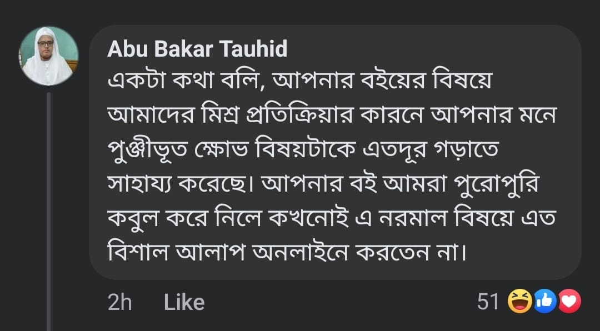

আকিদাহর বিষয়ে কপিবাজি নরমাল ব্যাপার; কিন্তু তাফসির কপি করা মারাত্মক ব্যাপার। বিশাল…
১ জুলাই, ২০২৪
আকিদাহর বিষয়ে কপিবাজি নরমাল ব্যাপার; কিন্তু তাফসির কপি করা মারাত্মক ব্যাপার। বিশাল অন্যায়। তবে আকিদাহ কপি করা মোটেও অন্যায় নয়। অন্যায় হলেও তা প্রকাশ করা বৈধ নয়; না-জায়েয, হারাম, ইজমার খেলাফ। সুতরাং মিযান হারুন সাহেব তার পোস্টের কারণে করজোড়ে ক্ষমাপ্রার্থনা করা ওয়াজিব।
—কালামি উসূল
আকিদাহর বিষয়ে কপিবাজি নরমাল ব্যাপার; কিন্তু তাফসির কপি করা মারাত্মক ব্যাপার। বিশাল অন্যায়। তবে আকিদাহ কপি করা মোটেও অন্যায় নয়। অন্যায় হলেও তা প্রকাশ করা বৈধ নয়; না-জায়েয, হারাম, ইজমার খেলাফ। সুতরাং মিযান হারুন সাহেব তার পোস্টের কারণে করজোড়ে ক্ষমাপ্রার্থনা করা ওয়াজিব।
—কালামি উসূল
